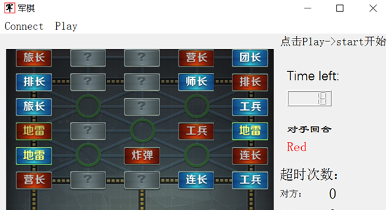

Miku Crawler
Miku Crawler
这是一个基于selenium的爬虫项目，爬取Bilibili上部分Vocaloid视频的相关信息，并用Django数据库生成数据查询网站。本网站由主页（搜索页）、视频列表、作者列表、视频搜索结果页面、作者搜索结果页面、视频详情页、up主详情页组成，其中视频列表、作者列表、视频搜索结果页面、作者搜索结果页面均支持分页功能。
This is a crawler project based on selenium, which crawls the data of some Vocaloid videos on BiliBili and
generates a data query website using Django database. This website is composed of home page (search page),
video/author list, video/author search result page, video/uper detail page. Moreover, the video/author list and
video/author search result page all support paging function.
